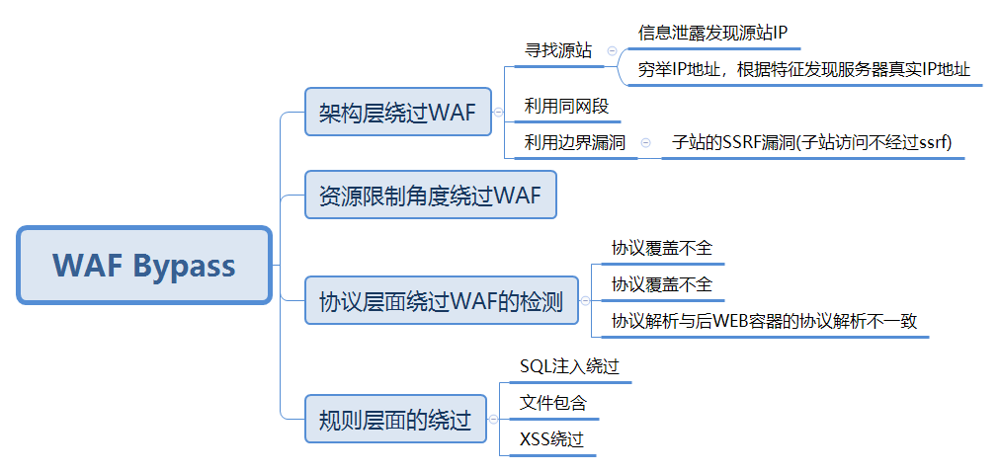

域委派是指，将域内用户的权限委派给服务账号，使得服务账号能以用户权限开展域内活动。
域渗透之SPN阅读全文
服务主体名称（SPN）是服务实例的唯一标识符。Kerberos身份验证使用SPN将服务实例与服务登录帐户关联。
如果您在整个林中的计算机上安装服务的多个实例，则每个实例必须具有自己的SPN。
在Kerberos身份验证服务可以使用SPN对服务进行身份验证之前，必须在该服务实例用于登录的帐户对象上注册SPN。
XSS + CSRF 阅读全文
XSS 漏洞利用方式，最直接的就是盗取cookie，使用cookie实现用户登录。 但如果有 httponly 防护，cookie 也就无法被窃取，又当如何？试想过 当 XSS 遇上 CSRF 又会擦出怎样的火花？
window访问控制模型阅读全文
Windows中的访问控制模型（Access Control Model），它是Windows安全性的基础构件。访问控制模型有两个主要的组成部分，访问令牌（Access Token）和安全描述符（Security Descriptor），它们分别是访问者和被访问者拥有的东西。通过访问令牌和安全描述符的内容，Windows可以确定持有令牌的访问者能否访问持有安全描述符的对象。
WAF浅析
阅读全文
详情可看此篇文章:
WAF攻防研究之四个层次Bypass WAF

参考文章:
WAF攻防研究之四个层次Bypass WAF https://weibo.com/ttarticle/p/show?id=2309404007261092631700